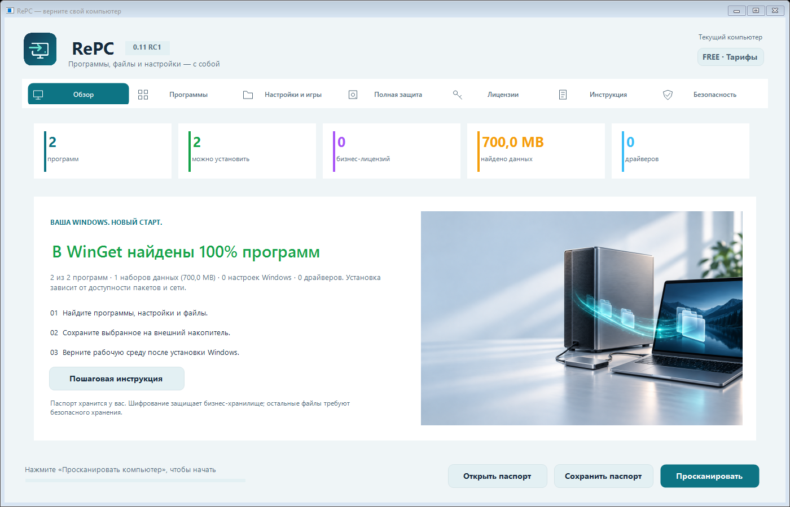
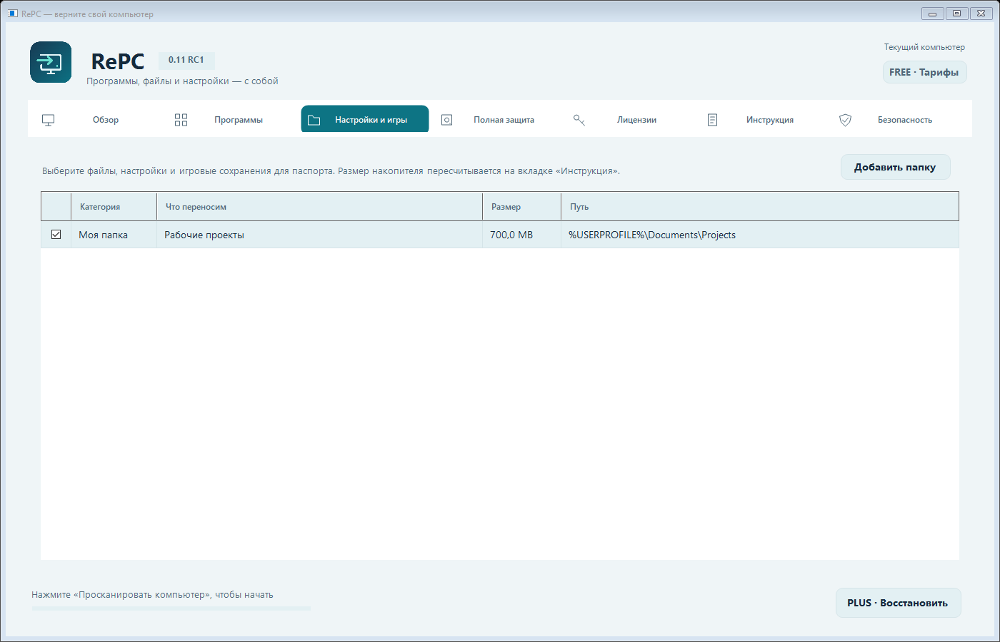
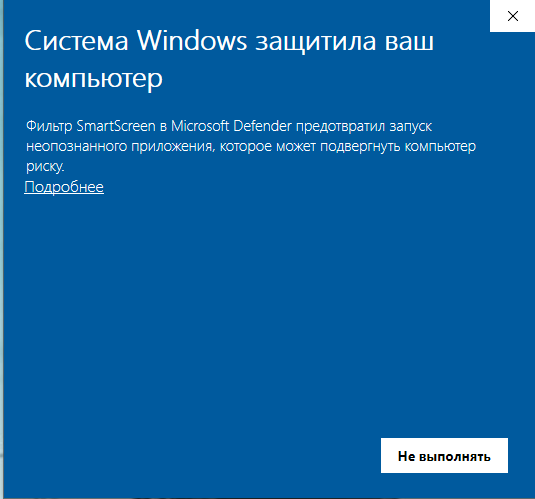
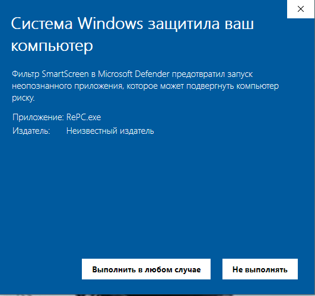

Программы
Список приложений без системного мусора и сопоставление с официальными пакетами WinGet.
Программы, проекты, настройки и сохранения игр. Соберите всё нужное в один паспорт компьютера — и возвращайтесь к работе после переустановки.
Что переносит RePC
Сначала бесплатное сканирование показывает, что действительно найдено. Только после этого вы выбираете данные и тариф.
Список приложений без системного мусора и сопоставление с официальными пакетами WinGet.
Документы, выбранные папки, параметры Windows, редакторов и других поддерживаемых приложений.
Сохранения и локальные библиотеки Steam, чтобы поддерживаемые игры не пришлось скачивать заново.
Инвентаризация подписанных драйверов и подготовка их восстановления после установки Windows.
Обнаружение 1С, CryptoPro, JetBrains, Adobe, Autodesk, СБИС, Контур и других популярных продуктов.
В Pro и Business — штатный полный образ Windows на внешний HDD или SSD с проверкой.
До и после переустановки
RePC не переустанавливает Windows сам. Он готовит перенос до установки и помогает восстановить выбранное после неё.
Проверьте найденные программы, данные, игры, драйверы и продукты с лицензиями.

Выберите нужное и сохраните файл .repc на NTFS/exFAT‑накопитель с рассчитанным запасом места.
Установите RePC, откройте паспорт, верните файлы и настройки, затем установите программы.

Первый запуск
RePC 0.11.0 RC1 распространяется без коммерческого сертификата Authenticode. Для разработчиков и компаний из России выпуск и перевыпуск международных сертификатов ограничен рядом зарубежных удостоверяющих центров; например, DigiCert официально приостановил выдачу всех типов сертификатов, связанных с РФ и Беларусью. Это объясняет статус «Неизвестный издатель», но само по себе не доказывает ни безопасность, ни вредоносность файла.
Скачивайте только по кнопке на этом сайте. Убедитесь, что файл называется RePC.exe, и сравните SHA‑256. Не запускайте копию из письма, мессенджера или постороннего сайта.
Загрузить RePC.exe в VirusTotal ↗ · выберите скачанный EXE; отчёт создаётся VirusTotal после загрузки.
Проверены автоматические сценарии архива, целостности и лицензирования. Реальный перенос 1С, КриптоПро, СБИС и Контур требует проверки на вашем лицензированном стенде; восстановление файлов не заменяет активацию.
362705BF6D77B69E93CA271099CED9DD17E299A331D128E50C2D4FBA97B7CFD6Проверка в PowerShell:
Get-FileHash "$env:USERPROFILE\Downloads\RePC.exe" -Algorithm SHA256

Изображения — наглядные макеты Windows 10/11. Точный вид окна зависит от версии и политики безопасности. Мы не рекомендуем отключать SmartScreen или антивирус.

Безопасность
Публичный хеш фиксирует конкретную сборку. Паспорт проверяется перед восстановлением, опасные пути блокируются, а бизнес-данные хранятся в зашифрованном разделе архива.
Тарифы
Все цены окончательные. Платные ключи привязываются к коду компьютера, указанному при покупке.
Понять, что можно восстановить.
Перенос на одном компьютере.
Полное резервирование этого компьютера.
Для рабочих программ и лицензионных данных.
Что важно знать заранее
Частые вопросы
Нет. Оно может означать, что файл новый, редко скачивается или не подписан доверенным издателем. Но игнорировать предупреждение вслепую тоже нельзя: скачайте RePC только с официальной страницы, сравните SHA‑256 и оставьте антивирус включённым.
Нет. RePC не требует отключения защиты Windows. Если политика организации полностью запрещает неподписанные приложения, обратитесь к системному администратору.
После сканирования RePC покажет расчёт. Для небольшого паспорта обычно подходят 32–64 ГБ. Игры и образ Windows лучше сохранять на внешний HDD/SSD от 500 ГБ в NTFS или exFAT.
Можно выбрать найденные библиотеки Steam и поддерживаемые сохранения. Это уменьшает повторное скачивание, но вход в аккаунт и Steam Guard могут потребоваться снова.
Business обнаруживает поддерживаемые продукты и переносимые локальные лицензионные данные в зашифрованном разделе. Серверные, аппаратные и привязанные к поставщику лицензии могут потребовать официальной повторной активации.
Никуда: паспорт создаётся локально в выбранном вами месте. Сервер получает только данные, необходимые для оплаты и проверки лицензии RePC.
Снова скачайте RePC, подключите накопитель, нажмите «Открыть паспорт», выберите файл .repc и выполняйте восстановление по вкладкам. Сначала файлы и настройки, затем программы и лицензии.
Начните до переустановки
И только потом решайте, какой перенос вам нужен.